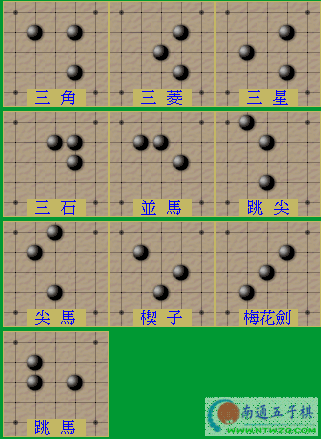

赢的小秘诀
#1 赢的小秘诀作者：有志青年 发表时间：2006-2-12 14:14:36
如果你是开局者(即图中持黑子者)的话，依照以下的十种棋局下子，只要你的对手不是五子棋上段的超级高手，那麼赢的机会可是相当高的喔！

#2 Re:赢的小秘诀作者：幽若 发表时间：2006-2-12 18:15:11
对方只要不是太厉害滴一般黑总是赢,不管他走成什么样子,嘿嘿［ 董明 于 2013-2-19 14:13:37 时花20金币送鲜花一朵］
#3 Re:赢的小秘诀作者：连珠☆弈 发表时间：2006-2-14 16:35:48
三子组合
强！
#4 Re:赢的小秘诀作者：雁儿 发表时间：2006-3-7 20:55:50
好。。。。。。。。#5 Re:赢的小秘诀作者：耳日 发表时间：2006-3-21 11:21:05
强啊#6 Re:赢的小秘诀作者：清逸 发表时间：2006-3-21 17:31:49
学习一下：）#7 Re:赢的小秘诀作者：太子白 发表时间：2006-4-5 7:19:59
不错#8 Re:赢的小秘诀作者：不喜欢温柔 发表时间：2006-4-8 17:18:55
不错~！！#9 Re:赢的小秘诀作者：莲花解语 发表时间：2006-4-10 12:19:59
试过,不错!#10 Re:赢的小秘诀作者：非妤 发表时间：2006-4-27 21:08:31
还要好好学习哦,谢谢咯#11 Re:赢的小秘诀作者：奇点1 发表时间：2006-4-30 21:29:57
我是新手 谢谢老大
#12 Re:赢的小秘诀作者：连珠之友 发表时间：2006-5-3 22:16:07
总结得不错。#13 Re:赢的小秘诀作者：沉默火焰 发表时间：2006-5-9 16:05:24
一定要好好学习，中国人发明的东西啊。#14 Re:赢的小秘诀作者：hylpe 发表时间：2006-5-30 22:08:29
要得啊.#15 Re:赢的小秘诀作者：冰乐爽鱼 发表时间：2006-6-1 22:24:54
#16 Re:赢的小秘诀作者：送分 发表时间：2006-6-3 21:50:54
要是有对应的防守子就更好看了。
那样可以作为开局参考。
#17 Re:赢的小秘诀作者：小丸.net 发表时间：2006-6-4 10:05:52
说白了，这是五子棋的十种必胜形#18 Re:赢的小秘诀作者：我们之间 发表时间：2006-6-6 10:49:07
还要好好学 希望有好的东东一起分享#19 Re:赢的小秘诀作者：ベ☆ve寶々 发表时间：2006-9-3 15:05:45
值得 学习~~! 顶!
#20 Re:赢的小秘诀作者：浩楠 发表时间：2006-9-12 14:19:39
这几种都用过啦,三角比较好用(至少我这么认为),不过网络上的高手也很多的
#21 Re:Re:赢的小秘诀作者：冰冷的风 发表时间：2006-9-13 16:19:20
引用：
原文由 连珠☆弈 发表于 2006-2-14 16:35:48 :三子组合
强！
#22 Re:赢的小秘诀作者：极地剑客 发表时间：2006-9-17 14:21:08
以前粒粒连珠上看到过，很不错：）#23 Re:赢的小秘诀作者：刘广福 发表时间：2006-9-17 14:53:40
高 实在高..........................#24 Re:赢的小秘诀作者：啊丫呀 发表时间：2006-9-19 11:50:32
学习一下：）#25 Re:赢的小秘诀作者：默默无闻 发表时间：2006-10-8 9:32:52
学习一下~~~~~~~~~~~~~#26 Re:赢的小秘诀作者：破网的蜘蛛 发表时间：2006-10-16 16:06:22
不会吧，黑胜也要建立在一定的基础上的吧#27 Re:赢的小秘诀作者：安静但有趣 发表时间：2006-10-17 16:22:51
 厉害 啊 不错啊 谢谢啊
厉害 啊 不错啊 谢谢啊#28 Re:赢的小秘诀作者：天上掉个馅饼 发表时间：2006-10-27 19:31:07
强，有没有环境约束？？？
#29 Re:赢的小秘诀作者：静0902 发表时间：2006-10-29 20:41:15
试试#30 Re:赢的小秘诀作者：风行奇迹 发表时间：2006-11-1 19:24:09
收藏！谢谢！#31 Re:赢的小秘诀作者：来客沙丝 发表时间：2009-3-26 20:30:18
原来如此！试试看。#32 Re:赢的小秘诀作者：四川丰都 发表时间：2012-4-22 19:57:23
可是为什么人家下成这些形状时我还能赢？#33 Re:赢的小秘诀作者：东方彩虹 发表时间：2012-9-21 10:31:39
曾经试过，确实是，不过遇到稍微棋艺高的就不行了。#34 Re:赢的小秘诀作者：那云那月 发表时间：2012-12-15 15:28:48
学习了！顶！#35 Re:赢的小秘诀作者：钱红颖 发表时间：2013-7-17 17:48:44
太棒了